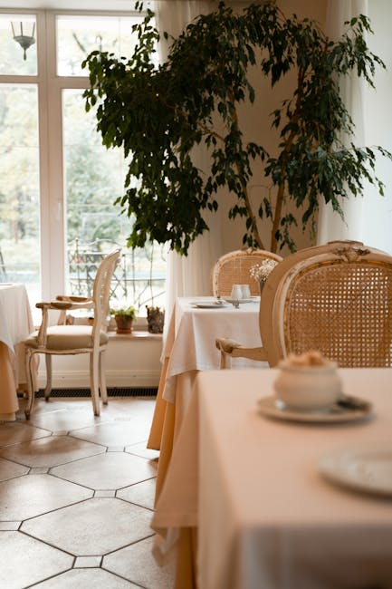
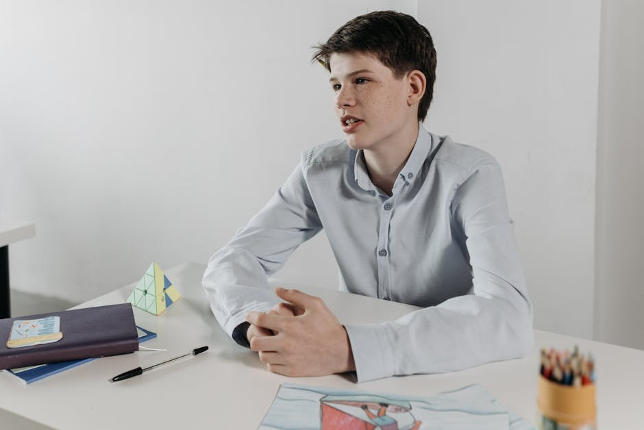

Generated Images
Theme: Your "normal" day is someone's dream. So be thankful.
Prompt 1:
Create a realistic classroom scene depicting a young boy named Tommy sitting alone at a small desk in the back of the room. The focus should be on Tommy and his facial expression, which should convey a sense of tranquility despite his low test scores. Include the test score list on the wall behind him, with his name clearly visible at the bottom. The lighting should be natural and warm, with a soft glow illuminating the classroom. The overall mood should be serene and reflective.

Prompt 2:
A classroom setting with Tommy, a child with a big smile, greeting his teacher, Mrs. Johnson, with a cheerful "good morning" as she enters the room. Sunbeams filter through a nearby window, casting a warm glow upon the pair. The scene has a cartoonish style with vibrant colors and a bright, optimistic mood.
Prompt 3:
**Image Prompt:**
**Subject:** Tommy, a young boy, showing Mrs. Johnson his drawing of a giraffe.
**Scene:** A classroom, with wooden desks and a large window. The sun shines through the window, casting a warm glow on the scene.
**Style:** Realistic, natural lighting.
**Composition:** Mrs. Johnson and Tommy are standing in the center of the frame. Tommy holds up his drawing for Mrs. Johnson to see. Mrs. Johnson smiles down at him with warmth and encouragement.
**Specific Details:**
* Tommy is a smiling, chubby-cheeked boy with brown hair and blue eyes.
* He wears a blue shirt and jeans.
* The giraffe drawing is on a piece of white paper. It is a simple drawing, but it is clear that Tommy put a lot of effort into it.
* Mrs. Johnson is a middle-aged woman with gray hair and glasses.
* She wears a pink blouse and a black skirt.
* The classroom has a large window with a view of a park.
Prompt 4:
A young boy and his female teacher walk down a residential street on a sunny afternoon. The teacher is gently holding the boy's hand, and they are walking at a leisurely pace. The boy is smiling and looking up at the teacher, while the teacher is looking ahead with a warm expression. The boy is wearing casual clothing, and the teacher is wearing a professional dress. The lighting is natural and warm, and the overall mood is calm and peaceful.

Prompt 5:
Depict a young boy, Tommy, grinning widely in a classroom setting. With warm lighting illuminating the scene, capture his joyous expression and cheerful demeanor. Focus on the colors of the classroom and the details of Tommy's clothing and facial features.
Prompt 6:
An adult and child side-by-side, under a beautiful sunset. The adult is touching the child's hair with a gentle smile. Loose brush strokes, warm colors. Highlights of orange, pink, purple and yellow in the sky.
Prompt 7:
A warm, painterly scene with soft lighting. In the foreground, Mrs. Johnson, a kind-faced, middle-aged woman, walks with a small boy, Tommy. Tommy exuberantly points up at the sunset. His face is filled with awe, and a smile brightens his entire face. Behind them and slightly out of focus, the sun glows in the sky, casting an ethereal glow over their figures.